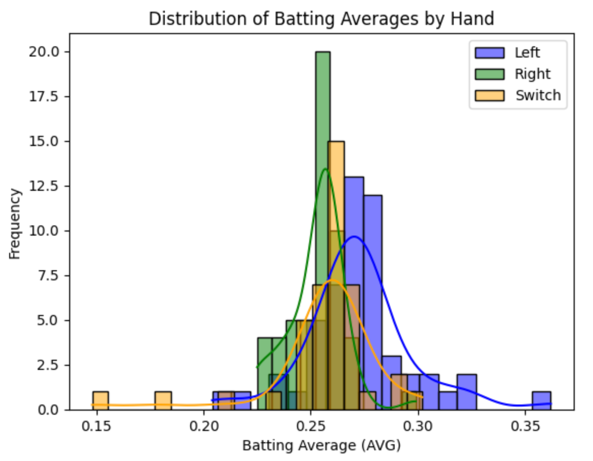
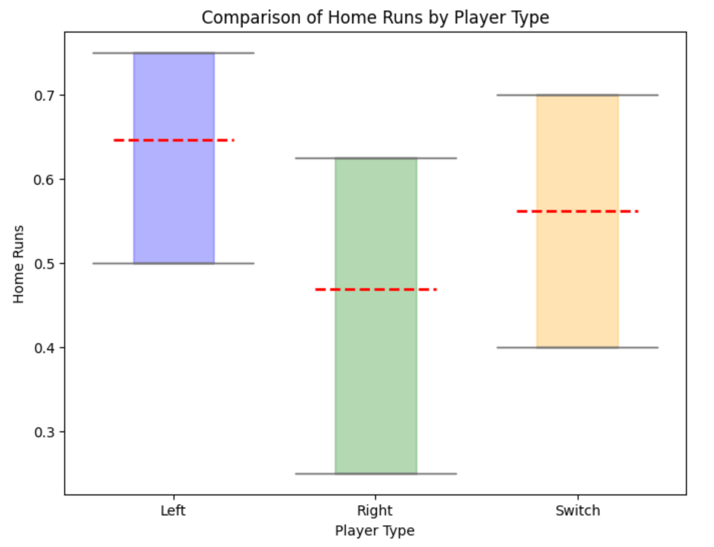
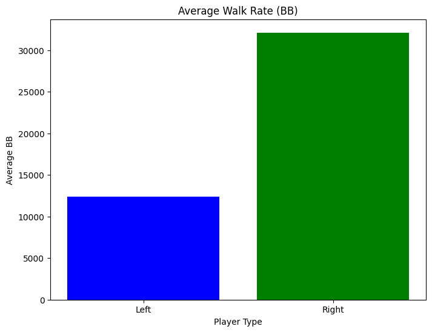
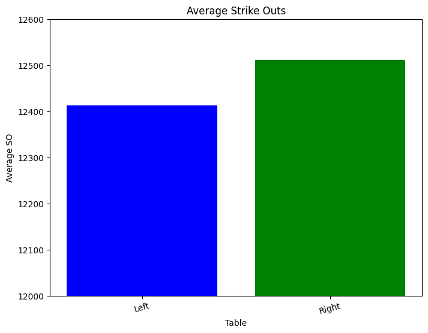

Handedness Comparison in Baseball
By Amy Tran | May 19, 2024

In many sports, being left-handed can offer a strategic advantage due to the element of surprise and the potential for different angles of attack or play. However, in America’s pastime, being a lefty poses an especially significant advantage. Strategically, southpaws have a tactical advantage because they're mainly facing right-handed batters, and the angle at which they release the ball can be more challenging for right-handed hitters to pick up. This can give them an edge in strikeouts and overall effectiveness on the mound. Left-handed batters can also have an advantage in baseball due to their positioning in the batter's box relative to the pitching angle. We will explore the differences between left and right-handed batters and pitchers, and look into Pat Venditte, an ambidextrous pitcher for the Oakland Athletics.
Batters
Left-handed batting gives hitters closer proximity to first base, which increases their likelihood of beating out ground balls. They also frequently face right-handed pitchers, leveraging the advantage of facing pitches that come from a different angle.
In this overlaid histogram, it's clear that lefties boast higher batting averages on average. However, it’s interesting that there is a wider spread in performance among left-handed batters, so while lefties have the potential for superb batting averages, there's also a greater degree of variability in their performance. Conversely, right-handed batters exhibit a different trend. While they tend to have a lower batting average, they are more consistent. The narrower spread in their histogram suggests a more predictable performance across the board. This consistency can be a valuable asset for teams and provide a reliable baseline performance level.
Although less common, switch hitters present an interesting case in baseball. Chipper Jones, for example, is a switch hitter who spent the majority of his career with the Atlanta Braves where he demonstrated the versatility and adaptability switch hitters bring to a ballpark. Not only is he a switch hitter, he is the only switch hitter in MLB history that has made 468 home runs and had a career batting average of .303. Despite the rarity of switch hitters, their performance is similar to that of right-handed and left-handed batters. This parity goes to show the skill and versatility of switch hitters in the major leagues as they navigate facing pitchers from both sides of the mound.
Analyzing home runs by each handedness provides further insight into batting performance. Left-handed batters score the most home runs on average, followed by switch hitters and then right-handed batters, although the sample size for left and switch hitters is much smaller. Nonetheless, the difference is statistically significant.
Pitchers
With most batters being right-handed, facing a left-handed pitcher would be a change; hitters are less accustomed to their throw. Left-handed pitchers also benefit from natural movement on pitches, like curveballs and sliders, which can be challenging for right-handed batters to track. They also have an advantage with pickoff moves to first base and in fielding positions, particularly on the first base side. This strategic advantage forces opposing teams to adjust their lineup, giving the team with the left-handed pitcher a competitive edge.
In MLB history from 1900 to 2024, southpaws had a much lower average walk rate but also lower average strikeout rates compared to their right-handed counterparts.
In this hypothesis test comparing strikeout rates, the null hypothesis is that left-handed and right-handed pitchers perform equally, while the alternative hypothesis is that one group performs either better or worse than the other. Under a p-value of 0.01, we can reject the null hypothesis because the p-value is lower than the significance level, concluding that the difference in walk rates is statistically significant and we accept the alternative hypothesis. Thus, the difference between the strikeouts is marginal but statistically significant under a 0.01 p-value.
Pat Venditte Profile
Pat Venditte, a switch pitcher, had a big influence in MLB with his extraordinary ability to pitch well with both arms, with a career average ERA of 4.73, SO of 58, and BB% of 9%. His talent even challenged MLB and MiLB to create a rule specifically for ambidextrous pitchers, known as the "Pat Venditte Rule". This rule mandates that an ambidextrous pitcher must declare which hand he will use to pitch to a batter before the at-bat starts and must stick to that hand throughout the entirety of the at-bat unless an injury occurs. He has played for the Oakland Athletics, Toronto Blue Jays, Seattle Mariners, Los Angeles Dodgers, San Francisco Giants, and Miami Marlins throughout his career. After an impressive collegiate career at Creighton University, Venditte was drafted by the New York Yankees in 2008 and later signed with the Athletics as a free agent before the 2015 season, making his MLB debut that same year.
Conclusion
All in all, each handedness has distinct advantages in baseball. Delivering pitches on the diamond, southpaws keep hitters guessing. Righties have consistency at the plate and provide a steady backbone for their teams. Switch hitters, like Chipper Jones, defy expectations and swing from both sides of the plate with equal prowess. They're the unicorns of baseball, adding an extra dash of excitement to the game. Amidst it all, we have the legendary Pat Venditte whose ambidextrous talents forced the baseball world to rewrite the rules. But whether you're a lefty, a righty, or a switch hitter, baseball is a game where anything can happen, and every player brings their unique flair to the field. And as always, let’s go Oakland!